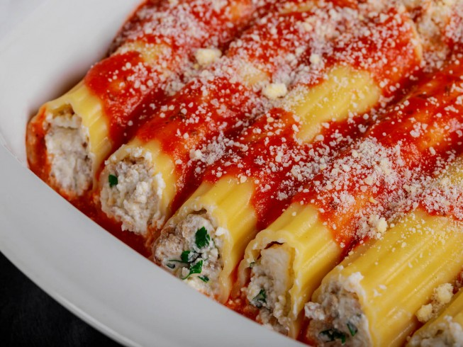

Manicotti

Descriotion
Steps
-
Cook manicotti in boiling water until done. Drain, and rinse with cold water.
-
Preheat oven to 350 degrees F (175 degrees C).
-
In a large bowl, combine ricotta, mozzarella, and 1/2 cup Parmesan, eggs, parsley, and salt and pepper. Mix well.
-
Pour 1/2 cup sauce into an 11x17 inch baking dish. Fill each manicotti shell with 3 tablespoons cheese mixture, and arrange over sauce .
our remaining sauce over top, and sprinkle with remaining Parmesan cheese.
-
Bake 45 minutes, or until bubbly.